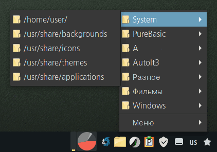

PureBasic
SaveFolders
Назначение
Меню избранных папок.

Взаимосвязанные
SaveFoldersРабота с программой
Быстрый доступ к папкам. Если у вас сложная система папок и нужно часто переходить к якорным точкам файловой системы, то программа позволяет создать двух уровневую систему папок.
ini-файл содержит одну секцию настроек [Set], которая игнорируется при считывании путей. Здесь 3 параметра - файловый менеджер, редактор и флаг сокращения путей. Если параметры отсутствуют то используется xdg-open.
Остальные секции содержат пути, которые будут в меню в трее.
Если перед путём стоит символ "@", то этот путь открывается от админа, это полезно для системных папок во время настройки ОС.
Если путь не существует, то он не будет добавлен в меню.
Если раздел пуст всвязи с тем что нет путей или они не существуют, то такой раздел тоже не добавляется в меню.